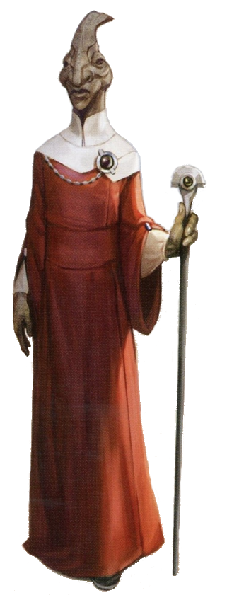

Vurk
vurk
Special Abilities: Vurks begin the game with one rank in Negotiation. They still may not train Negotiation above rank 2 during character creation.
Amphibious: Vurks can breathe underwater without penalty and never suffer movement penalties when traveling through water.
Cold Blooded: Vurks add to all checks they make while in cold environments (in addition to any other penalties).
This reptilian race has extended their nomadic tradition to the galaxy. Galactic society underestimates Vurk due to their lack of interest in heavy industrialization and technology. They have, however, a complex system of personal governance and political involvement that baffles Core World politicians and philosophers.
Reptiles with dark, bulbous eyes and tall head crests, Vurks can breathe underwater as well as they can breathe open air. The warm waters and atmosphere of their homeworld provide much-needed external energy for their metabolism. Although they can function away from such optimal conditions, Vurks do find cooler climates (and most spaceships) a bit uncomfortable. Most Vurks journeying offworld utilize a wide variety of tricks to maintain their body temperature, from wearing heavy clothing, using careful meditation, imbibing hot beverages continually throughout the day, or retiring to a nice, hour-long warm bath.
Vurks are semi-nomadic, but in a different way than other species. It is not unusual for a Vurk community or a whole village to decide to move on, not only based on the changing of a season, but also for a philosophical need. Instead of the village relocating together, each Vurk (and perhaps close friends or acquaintances, but not necessarily family) may choose to travel together. For all intents and purposes, that village no longer exists. Vurks instead integrate with other communities or form new ones based on needs and desires. It is not unusual to find a mature Vurk who has already been in half a dozen successful communities.
The galaxy considers them a primitive people, but Vurks have a sophisticated community and social status system based on reputation. Vurks judge each other by their individual accomplishments, deeds, and actions, and readily discuss those perceptions with other Vurks. They don’t consider this gossip or idle chatter, but part of the process of being in a community. Of course, two Vurks may perceive a third Vurk in two different ways, but none of them see this as a negative. After all, no individuals see things in the exact same way. Vurks don’t expect outsiders to participate, but those traveling offworld naturally extend this practice to friends and loved ones.
This discussion of reputation and perception leads to continual interpersonal conflicts where two or more Vurks may disagree on social or economic matters. These conflicts then lead to compromises or experiments where Vurks try one solution before attempting another. In the end, these discussions lead to a set of casual rules governing behavior for each community, prompting even more discussion. Those who don’t participate in the dialogue either choose to go with the majority or simply leave to found a new community. While this social structure may seem anarchic, Vurks don’t object to laws or social structures per se; they simply believe that these concepts are things to be discussed and negotiated on a case-by-case basis.
Each time a Vurk integrates or forms into a new community, a new discussion over mores and consent develops. Those who disagree, leave. Those who agree, stay. This social and cultural practice has developed and changed for as long as Vurks have had recorded history. To outsiders, this makes Vurks appear mercurial or constantly changing in ethics and morals. In reality, Vurks constantly question concepts of ethics and morals in order to understand where they stand.
There are outliers, of course. There are those who intentionally break these social or cultural mores, those who withhold information and lie in order to gain some form of advantage, and those who commit violence to resolve their issues. These individuals gain a reputation that gets passed on to each community they encounter. Eventually, these outliers get exiled, effectively turning them into a community of one.
Sembla (or Utavurk) is located in the Outer Rim, in the Mahrusha sector, at the far end of the Perlemian Trade Route. With four moons, tidal stresses keep the Vurk homeworld tectonically active, with shallow seas and volcanic islands.
Because Sembla doesn’t sit near any major or minor trade routes, ships hardly travel there. The planet has been historically isolated from all of the Galactic Republic’s wars. Some Imperial scientists, however, have established a research base to study Sembla as a source of geothermal energy and to experiment with the planet’s unique magnetic magma. As a result, the Imperials have also undertaken strip-mining operations to build and power the base, pressing Vurks into a cheap source of labor and destroying nearby islands in the process.
The Empire doesn’t respect the working conditions the Vurks must endure, and various pockets of resistance have appeared throughout the homeworld. Vurks on the other side of the planet don’t see the results of Imperial power and have not decided yet to take up arms. In this case, the habit the Vurks have of discussing and witnessing firsthand an individual's bad actions may not be fast enough to unite the planet against the Empire.
On their homeworld, Vurks speak primarily Semblan. There are of course several hundred dialects and unrelated languages, but ages ago, through an intense period of planet-wide discussion, the majority of Vurks decided on Semblan as their language. (As a consequence, they also changed the name of their homeworld from Utavurk to Sembla to reflect this decision.) Plenty of Vurks disagreed and thus formed communities that speak other languages. Those who journey offworld, however, learn Basic.
Describing the Force as water or a river fits well with Vurks, who not only live on an aquatic world, but have wandered their planet much like the rain, rivers, and oceans. While Vurks don’t have a specific connection to, or affinity for, the Force, certain concepts are easier for them to grasp due to their cultural background. Failure isn’t a setback, but simply a new experience. Pick up and move on. This gives them an openness to try something different or try again in a new way, a perfect attitude for a Mystic.
Of the Vurks who initially tried to join the Jedi Order, most failed due to the rigid discipline. Instead of becoming bitter or discouraged, these petitioners merely saw this setback as part of their continual migration. Perhaps this was not the community they should be joining at this time. Oddly, a few of those who failed the initial tests later came back as better candidates.
In Vurk society, when is violence acceptable? Again, this is negotiated on a case-by-case basis, but nearly all Vurk agree that causing a death, be it through self-defense or murder, is reprehensible (barring euthanasia). With death, that individual’s ability to voice a new opinion, thought, or argument is silenced forever. From this basic concept, Vurks have developed a Stricture of Violence (although most Vurks don’t call it that).
The Clone Wars and the Galactic Civil War have left Sembla (mostly) untouched, and thus Vurks haven’t had to modify this Stricture. Those traveling offworld, however, have seen a galaxy not only torn apart by war, but also torn apart by injustice. Can killing be justified if it means freeing a group of slaves? Can freedom be preserved with war? Now, with an Imperial presence growing on Sembla, Vurks as a society must eventually reconcile their feelings about the Stricture. In the end, however, each individual Vurk has to struggle with what the galaxy is, versus what they grew up believing.